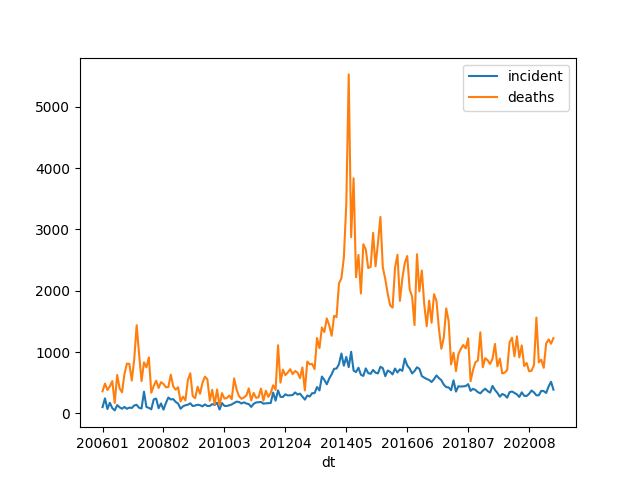

Conflict Statistics
UCDP/PRIO Armed Conflict Dataset
Deaths, Incidences, Globally
import pandas as pd
def overall_deaths(mon):
url = 'https://ucdp.uu.se/downloads/candidateged/GEDEvent_v22_0_%d.csv' % mon
df = pd.read_csv(url)
g = df[['country','deaths_b']].\
groupby(['country']).\
agg({'country':'count', 'deaths_b': 'sum'})
g.columns = ['incidents','deaths']
return g.sort_values('deaths',ascending=False)
print (overall_deaths(mon=6).head(20))
incidents deaths
country
Nigeria 90 180
Ukraine 408 128
Somalia 17 116
Iraq 25 109
Ethiopia 11 73
Myanmar (Burma) 117 71
Mali 34 67
Burkina Faso 20 57
Afghanistan 48 54
India 38 43
Niger 7 42
DR Congo (Zaire) 102 39
Pakistan 25 32
Central African Republic 11 28
Syria 36 24
Yemen (North Yemen) 30 24
Philippines 12 18
Egypt 15 16
Cameroon 33 13
Mozambique 34 10
Details for Specific Country
import pandas as pd
def country_attacked(mon, country):
url = 'https://ucdp.uu.se/downloads/candidateged/GEDEvent_v21_0_%d.csv' % mon
df = pd.read_csv(url)
df1 = df[df.country == country]
g = df1[['country','deaths_b','side_b']].\
groupby(['side_b','country']).\
agg({'side_b':'count', 'deaths_b': 'sum'})
g.columns = ['incidents','deaths']
return g.sort_values('deaths',ascending=False)
print (country_attacked(6, 'Syria'))
incidents deaths
side_b country
Syrian insurgents Syria 22 27
SDF Syria 16 8
Civilians Syria 8 0
Government of Israel Syria 1 0
Government of Syria Syria 1 0
IS Syria 15 0
GTD Africa
Global Terrorism Database focuses solely on terrorist attacks. Below is code for Africa, btw 2005 and June 2020.
import pandas as pd
df = pd.read_csv('gld.csv',sep='|')
df1 = df[(df.region_txt.str.contains('Africa')) & (df.iyear > 2005)]
df1['dt'] = df.apply(lambda x: "%d%02d" % (x.iyear,x.imonth), axis=1)
g1 = df1.groupby(['dt']).size()
g2 = df1.groupby(['dt'])['nkill'].sum()
g = pd.concat([g1,g2],axis=1)
g.columns = ['incident','deaths']
plt.savefig('gtdafrica.png')

Ukraine
Below is the output from VIINA project, it releases a "control file" which lists, for every town in Ukraine, whether it is under Russian or Ukrainian control. The report sums Russian controlled towns for each time period.
{kind=link}
Transport Chokepoints, Straits
import folium, pandas as pd, json
df = pd.read_csv('straits.csv',sep=';')
m = folium.Map(location=[30, 20], zoom_start=3)
for index, row in df.iterrows():
points = json.loads(row['Path'])
ts = "%s, %0.2f mboe/day, %d Vessels/Year" % (row['Location'],row['Oil'],row['Ships'])
folium.PolyLine(points, color='red', tooltip=ts, weight=4.0).add_to(m)
m.save('straits-out.html')